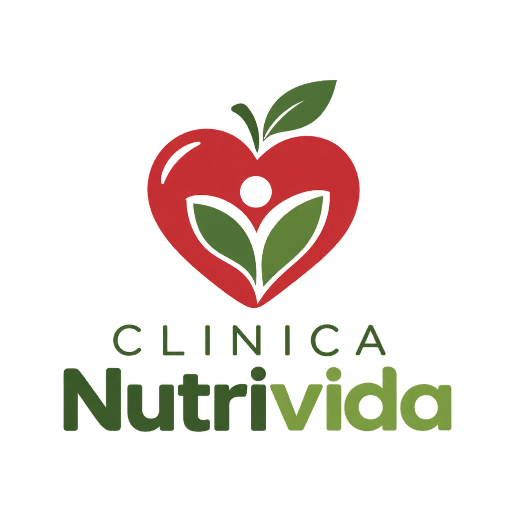
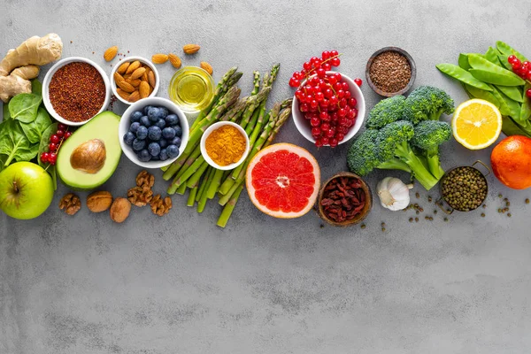

Tu bienestar integral comienza en tu plato. Diseñamos planes de alimentación 100% personalizados, basados en tus necesidades médicas y estilo de vida, para potenciar tu energía y proteger tu salud a largo plazo
NutriVida es una clínica de nutrición y dietética fundada en 2016 en Temuco, Región de La Araucanía. Está formada por 4 nutricionistas que atienden pacientes con distintos objetivos: pérdida de peso, control de enfermedades metabólicas, nutrición deportiva y alimentación vegetariana o vegana.